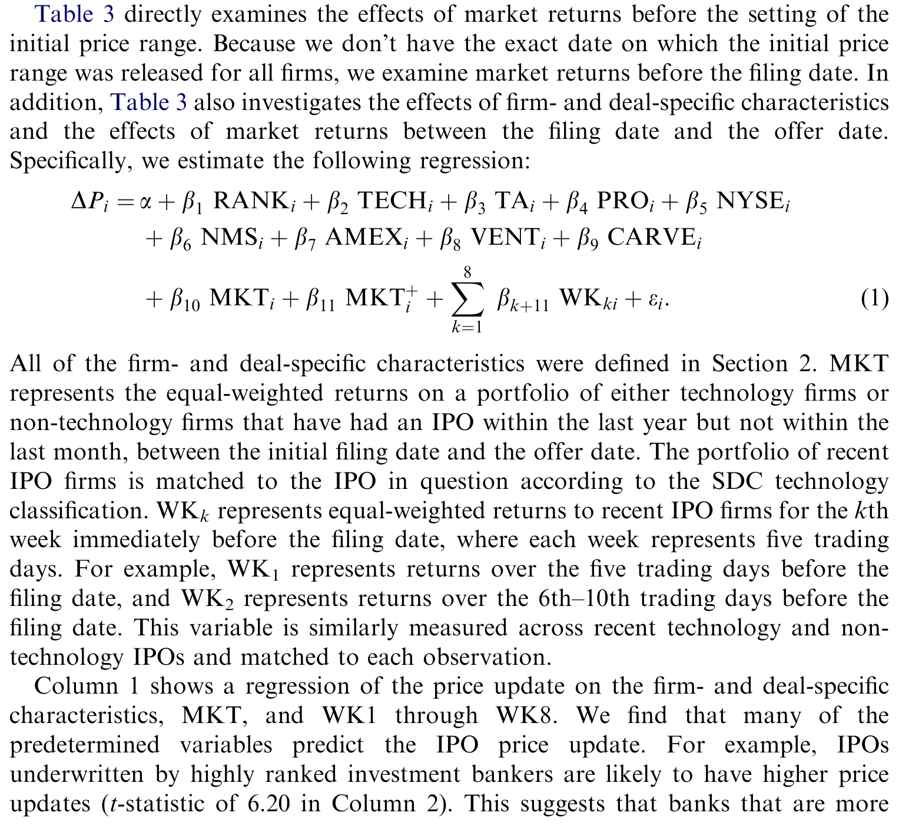
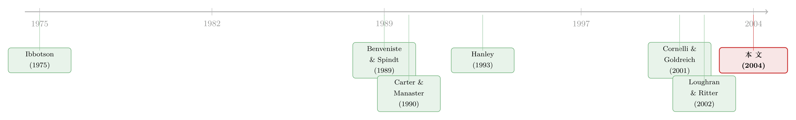

新股定价，到底「有没有效率」？——一桩关于显著性的旧公案
本文读的是 Lowry & Schwert (2004, Journal of Financial Economics)：把新股定价拆成「定价区间→发行价→上市首日」三段，逐段去问公开信息有没有被吃进价格里。两个发现——第一，公开信息没有被完全吃进定价区间，所以一直被前人当作「无偏估计」的区间中点，其实是有偏的；第二，公开信息也没有被完全吃进发行价，但这层偏差的经济意义极小。于是结论是一句颇为微妙的话：IPO 定价过程「几乎」是有效率的。
1 引言：一个让人不安的「免费午餐」
新股定价（IPO pricing）是金融学里最经久不衰的谜题之一。它的核心怪象叫抑价（underpricing）：公司以发行价把股票卖给投资者，第二天一开盘，价格平均要往上跳一大截——在本文的样本里，这个首日收益率（initial return, IR）平均高达 12.3%。钱就这样从发行人口袋里「漏」给了打新的投资者。
为什么承销商愿意把这笔钱「漏」出去？最有说服力的解释来自 Benveniste and Spindt (1989) 的部分调整假说（partial adjustment hypothesis）。故事是这样的：机构投资者在路演（registration period）里向承销商透露了关于公司价值的私有信息（private information）；承销商为了奖励他们「说真话」，只把这些好消息部分地计入发行价，剩下的好处就以高首日收益的形式留给了这些知情人。这是一笔精心设计的「信息租金」，逻辑自洽，也被后来的证据所支持——Hanley (1993)、Cornelli and Goldreich (2001) 都发现，路演里学到的私有信息确实只被部分计入了发行价。
可问题就出在这里。Loughran and Ritter (2002a) 端出了一个让人坐立不安的发现：不只是私有信息，连公开信息（public information）——比如发行期间整个股市的涨跌——也只被部分地计入了发行价。
这才是真正扎眼的地方。私有信息「只部分计入」可以用「奖励知情人」来解释；可公开信息是所有人都看得见的，市场涨了多少，发行人、承销商、散户都知道。承销商根本不需要为此奖励任何人。如果它仍然不把公开信息算进价格，那等于在用发行人的钱，「平白」地犒赏了所有打新者。这听上去，就是市场无效率的活证据。
于是 Loughran-Ritter 的发现像一根刺：它似乎在说，IPO 定价过程是无效率的。本文要做的，就是把这根刺拔出来，仔细看看它到底有多深。
2 把定价过程拆成三段
本文最关键的一步方法论选择，是不从发行价开始看，而是从更早的「定价区间」开始看。
要理解这一点，先得看清新股定价的完整时间线（如图 1，本文用一张简单的示意图刻画）。它分三步走：
- 第一步：公司和承销商先在招股说明书里给出一个初步定价区间（preliminary price range），比如「我们打算以 14–16 美元发行」。
- 第二步：临到发行前一天晚上，定下唯一的发行价（offer price）。
- 第三步：股票上市，市场用真金白银投出它认可的价格。
由此定义两个核心变量：价格更新（price update, ΔP），是发行价相对于区间中点的百分比变化；首日收益率（IR），是首日收盘价相对发行价的百分比变化。
$$ \Delta P = \frac{\text{Offer Price} - \text{Midpoint of Range}}{\text{Midpoint of Range}}, \qquad IR = \frac{\text{First Close} - \text{Offer Price}}{\text{Offer Price}} $$
前人（Hanley, 1993；Loughran and Ritter, 2002a；Bradley and Jordan, 2002）做研究时，都默认了一个看似无害的假设：区间中点是发行价的无偏预测。换句话说，他们把定价过程的「起点」当成了一块干净的基石，所有的分析都建立在它之上。
接着，一个自然的问题是：这块基石，本身干净吗？这正是本文要敲的第一锤。
3 第一处反转：连「起点」都不是无偏的
要检验「承销商在设定定价区间时有没有用尽公开信息」，最干净的做法，是去看区间公布之前的市场收益能不能预测后来的价格更新。如果承销商真的把所有公开信息都吃进了区间，那么区间公布之前的市场涨跌，就不该再与 ΔP 相关。
可这里有个数据上的拦路虎：SDC 数据库只记录了 IPO 的首次申报日，却不记录定价区间究竟哪天公布——很多公司是在后续的修订版招股书里才第一次给出价格区间的。本文的巧劲，是对 1996–1997 年的一个子样本（554 家公司），手动从 SEC 的 EDGAR 系统里翻出了「第一次出现价格区间」的确切日期。结果发现：约 60% 的公司在首版招股书里就给了区间，另外 40% 是后来才补上的；从区间公布到正式发行，平均隔了 44 个交易日，约占整个注册期的 75%。
有了这个日期，就能构造两个市场收益变量，做一个漂亮的对照回归：
如果承销商是有效率的，那么 MKTSDC 里那段「区间公布前」的行情就不该预测 ΔP，系数应该被 MKTEDGAR 完全盖过。可结果恰恰相反：MKTSDC 的系数比 MKTEDGAR 还要大一点、还要更显著一点。也就是说，连区间公布之前的市场涨跌，都还在偷偷地预测后来的价格更新。
把视野放回全样本（1985–1997，3,878 家公司），结论一以贯之：公司特征、发行特征，乃至申报前的大盘行情，都显著地预测价格更新——而它们本不该有这个能力（如表 3 所示）。

Table 3: directly examines the effects of market returns before the setting of the
还有一个朴素却有力的旁证：价格更新的均值是 −1.359%，对零的 t 值是 −4.79。也就是说，发行价平均比区间中点低 1.4%。这一条顺手否掉了一个流传已久的说法——「投行故意把区间定低、以制造打新热度」。如果真有这种「拉抬」策略，ΔP 该系统性为正才对。
第一处反转到此成立：区间中点不是发行价的无偏预测，承销商在设区间时确实漏掉了一部分公开信息。这直接动摇了前人研究的一块地基。
那么，这个偏差有多大？本文给出的数字是：公开信息能解释价格更新约 3% 的方差。这个 3% 妙就妙在——它既可以说高，也可以说低。说它高，是因为它和「公司/发行特征解释首日收益」的预测力旗鼓相当，而后者可是被无数理论与实证文章郑重其事地研究过的；说它低，是因为承销商终究把绝大多数公开信息都计入了区间。更关键的是——你根本无法在区间上交易。区间也许是个有偏的估计，但没有任何人能从这个偏差里赚到一分钱。
4 数据
把样本交代清楚。数据来自 SDC，覆盖 1985–1999 年的所有 IPO，剔除了单位发行（unit IPOs）、封闭式基金、REITs、ADRs，以及发行价低于 $5 的发行。由于 1998–1999 年的 IPO 行为「另成一派」，主分析锁定在 1985–1997，但所有检验在 1985–1999 上重做后结论稳健。
观测单位是单家 IPO 公司，核心回归样本为 3,878 家变量齐全的公司。解释变量包括承销商声誉评级 RANK（0–9，取自 Loughran and Ritter (2002b)，思路类似 Carter and Manaster (1990)）、科技股哑变量 TECH、规模代理（总资产 TA、申报募资额 PRO）、上市地哑变量、风投背景 VENT、分拆 CARVE 等，以及三种「市场收益」MKT 的度量。
本文很诚实地花了一整节谈样本选择（sample selection）。那 968 家因为缺数据被踢出回归的公司，并不是随机缺失的：回归样本的首日收益平均要高出近 2%（t 值 2.92），更可能在 NMS/AMEX 上市、更可能有风投背书。换句话说，「数据齐全」的公司本身就是一类特殊的公司，回归结论未必能外推到那些缺数据的发行上。这是读这篇文章时该挂在心上的一道保留。
5 第二处反转：统计显著 ≠ 经济显著
现在来到全文真正的命门，也是它和 Loughran-Ritter 分道扬镳的地方。
本文同样验证了「公开信息没被完全计入发行价」：首日收益与发行期间的市场收益显著正相关。在「是否统计显著」这件事上，两篇文章并无分歧。
但真正关键的一步，在于本文追问了一句前人没认真追问的话：这层显著，在经济上有多大？
答案是——小得惊人。本文把两种信息的「拉动力」摆在一起对比：
- 公开信息：发行期间市场收益变动
11%（约一个标准差），只带动首日收益变动1.6%（约0.08个标准差）。 - 私有信息：价格更新 ΔP 变动
18%（约一个标准差），却带动首日收益变动高达8%（约0.40个标准差）。
也就是说，撬动首日收益的，压倒性地是私有信息（ΔP 所代表的那一块），公开信息只占了一个零头。同样是一个标准差的冲击，私有信息的经济影响是公开信息的五倍。
于是反转出现了：那根扎眼的「无效率」之刺，统计上确实存在，但经济上几乎可以忽略。Benveniste-Spindt 的故事并没有被推翻——市场把绝大部分公开信息都按时计入了发行价，只在边边角角上留了一点点没算干净。这点「没算干净」精确可测，却太小，小到不足以让我们宣判整个定价过程「无效率」。
这正是本文方法论上最值得学的一招：先问「显不显著」，再问「值不值钱」。一个被精确测量出来的微小定价偏差，并不等于市场无效率。统计的放大镜会让任何细小的系统性关系都「显著」起来，但有效率与否，终究要由经济量级来裁决。（关于「市场要多久、以多大代价才把无效率消化掉」的另一种度量，可参见《无风险的套利，要等多久才显形？》。）
把两处反转合在一起，全文的故事就闭环了：承销商在区间和发行价两端，都漏掉了一点公开信息（第一处反转推翻了「区间无偏」的旧假设，第二处反转量出了发行价那点偏差的真实大小）；但漏掉的份额都极小，绝大多数公开信息其实都被老老实实地计入了。结论便落到那句精心拿捏过分寸的话上——IPO 定价过程「几乎」是有效率的。
6 文献脉络
把这条线索捋一捋，能更清楚地看到本文站在哪。
最早，Ibbotson (1975) 把新股「上市即涨」的抑价现象摆上了台面，留下一个「leaving money on the table」的谜。真正给出微观机制的是 Benveniste and Spindt (1989)：他们用部分调整假说，把抑价解释成承销商付给知情机构的信息租金。沿着这条私有信息的线，Hanley (1993) 证实了路演里学到的信息只被部分计入发行价，Cornelli and Goldreich (2001) 则深入到簿记建档（book building）的订单簿里，看承销商如何提取信息——这些都在为「私有信息」这半边故事添砖加瓦。

转折发生在 Loughran and Ritter (2002a)：他们指出连公开信息都只被部分计入，把矛头从「信息租金」推向了「定价无效率」，因为公开信息的部分计入是 Benveniste-Spindt 框架解释不了的。本文（Lowry and Schwert, 2004）正是对这场争论的直接回应——它不否认 Loughran-Ritter 的统计事实，而是把定价过程往前拆到定价区间，再用经济量级把这桩「无效率」重新称了一遍，最终给出一个介于「有效」与「无效」之间的、更精细的答案。值得一提的是，两位作者此前在 Lowry and Schwert (2002) 里就研究过 IPO 市场的周期性，对「行情如何渗进新股定价」这件事本就驾轻就熟（这条市场择时的线索，亦可对照《新股的「冷热」，其实是投行在替你算的一笔账》）。
评论与延伸（Q&A + 研究方向）
(a) 几个可能的疑问
Q：本文和 Loughran-Ritter (2002a) 到底分歧在哪？是推翻了它吗？
不是推翻，是「校准」。两篇在「公开信息没被完全计入发行价、且统计显著」这一点上完全一致。分歧只在解读：Loughran-Ritter 强调这层关系的存在，暗示无效率；本文则量出它的经济量级——
11%的市场收益冲击只换来1.6%的首日收益变动——从而得出「经济上几乎可忽略、过程几乎有效率」的结论。
Q：为什么说「区间中点有偏」是个独立的、值得单写的贡献？
因为它动的是前人研究的地基。Hanley、Bradley-Jordan 等一大批文章都把区间中点当作发行价的无偏预测，以此构造价格更新、抑价等变量。本文用 EDGAR 手工日期证明：区间公布之前的行情都还在预测价格更新，说明这块基石本身有偏。这对后续所有以区间中点为基准的实证都是一条警示。
Q：既然区间是有偏的，承销商为什么不修正？谁从这个偏差里获益？
这恰恰是本文坦承的「puzzle」。偏差经济意义很小，且无法交易——没人能在招股书的区间上买卖，所以这不是套利机会，而更像是承销商定价时的某种惯性或粗糙。本文没能指认出明确的受益方，这也是它留给后人的一个开放问题。
Q：那个 3% 的可预测性，到底算高还是算低？
作者故意把它放在「模棱两可」的位置。说高，是因为它和「公司特征解释首日收益」的预测力相当，而后者被文献反复研究；说低，是因为它意味着承销商把约
97%的方差都处理掉了。本文的立场是：单看 R² 无法定论，必须落到「这点偏差能否被交易、经济影响多大」上才有意义。
Q：样本选择会不会把结论带偏？
有这个风险，作者也明说了。被剔除的
968家缺数据公司在首日收益、上市地、风投背书上系统性地不同于回归样本（首日收益差近2%，t=2.92）。所以严格说，结论是关于「数据齐全的那类 IPO」的，外推到全体发行时要打折扣。
Q：1998–1999 年为什么要单独拿掉？
因为互联网泡沫期的 IPO 行为「另成一派」，抑价水平和定价动态都和此前迥异。本文主分析锁定 1985–1997，再用 1985–1999 做稳健性，避免让两年极端样本主导结论——这本身是个谨慎的处理。
(b) 几个可能的研究问题与提案
1. 把同一套「显著 vs. 值钱」的拷问搬到公司债一级市场。 【经济故事】公司债发行同样有「申报利差→定价利差→上市首日」的过程，也存在 underpricing（参见《新债上市第一笔成交，凭什么白赚 47 个基点？》）。公开信息（利率、信用利差走势）在债券定价里有没有被完全计入？经济量级多大？ 【可行性】中。需要 Mergent FISD 的发行数据 + TRACE 的首日成交，识别上可借鉴本文「申报前 vs. 申报后」市场变动的对照设计；难点在债券缺乏清晰的「定价区间」公布日。
2. 外资持有人是否改变了 IPO 对公开信息的吸收速度？ 【经济故事】若外资机构带来更强的信息生产能力，承销商面对的「知情需求」结构会变，公开信息计入定价的完整度可能上升。 【可行性】中。需跨国 IPO 样本 + 外资可投资度（investability）数据，识别可借力指数纳入等准自然实验；样本拼接是主要成本。
3. 「区间中点有偏」对所有以它为基准的实证有多大污染？ 【经济故事】既然中点有偏，那么大量用「ΔP=发行价/中点−1」构造的变量都含系统性测量误差。这种误差会把多少既有结论的系数推偏？ 【可行性】高。纯方法论 + 复现工作，用 EDGAR 真实区间日重构变量，逐一对照经典回归即可，doable。
4. 「无法交易的有偏估计」是否普遍存在于其它一级市场？ 【经济故事】本文的深层洞见是：一个有偏但不可交易的价格，不构成无效率。增发、配股、SPAC 等场合是否也有这种「有偏却套不出利」的中间价？ 【可行性】中。需各市场的中间报价数据，识别上仍可沿用本文「事件前信息不该有预测力」的逻辑。
我的判断
本文最大的贡献，不在于发现了什么新关系，而在于给一桩看似确凿的「无效率」案子重新定了量刑。它把方法论上一个常被忽视的区分——统计显著与经济显著——用 IPO 这个干净的场景演示得淋漓尽致，并顺手敲掉了「区间中点无偏」这块被前人默认了多年的地基。结论那句「几乎有效率」拿捏得恰到好处：既不否认数据里的偏差，也不夸大它的意义。
对识别，我最大的保留有二。其一是样本选择：作者自己已经证明缺数据公司系统性不同，而 EDGAR 子样本只有 1996–1997、554 家，正落在样本里行情最特殊的几年，用它来支撑「区间前信息仍有预测力」这一核心反转，外部效度要打个问号。其二是那个未被解释的 puzzle：如果区间偏差确实存在却无人获益、无法套利，那它究竟是承销商的理性选择，还是定价流程的粗糙噪声？本文回答不了，而这恰恰是机制层面最有意思的缺口。
后续我最想看到的，是把这套「先问显著、再问值钱」的拷问，系统地搬到公司债与外资持有人的场景里去——在那些流动性更差、信息生产者结构更复杂的市场，公开信息「计入不全」的经济量级，会不会就不再是个可忽略的零头了。
参考文献
Benveniste, L., Spindt, P. (1989). How investment bankers determine the offer price and allocation of new issues. Journal of Financial Economics 24, 343–362.
Bradley, D., Jordan, B. (2002). Partial adjustment to public information and IPO underpricing. Journal of Financial and Quantitative Analysis 37, 595–616.
Carter, R., Manaster, S. (1990). Initial public offerings and underwriter reputation. Journal of Finance 45, 1045–1068.
Cornelli, F., Goldreich, D. (2001). Bookbuilding: How informative is the order book? Unpublished working paper, Duke University.
Daniel, K. (2002). Discussion of 'Why don't issuers get upset about leaving money on the table in IPOs?'. Review of Financial Studies 15, 445–454.
Hanley, K. W. (1993). The underpricing of initial public offerings and the partial adjustment phenomenon. Journal of Financial Economics 34, 231–250.
Ibbotson, R. (1975). Price performance of common stock new issues. Journal of Financial Economics 2, 235–272.
Ljungqvist, A., Wilhelm, W. (2002). IPO allocations: Discriminatory or discretionary? Journal of Financial Economics 65, 167–201.
Loughran, T., Ritter, J. (2002a). Why don't issuers get upset about leaving money on the table in IPOs? Review of Financial Studies 15, 413–443.
Lowry, M., Schwert, G. W. (2002). IPO market cycles: Bubbles or sequential learning? Journal of Finance 57, 1171–1200.
Lowry, M., Schwert, G. W. (2004). Is the IPO pricing process efficient? Journal of Financial Economics 71(1), 3–26.